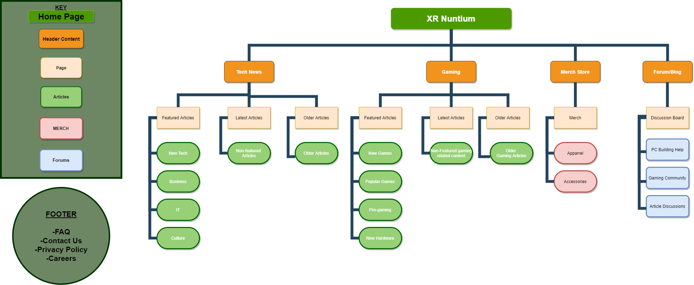
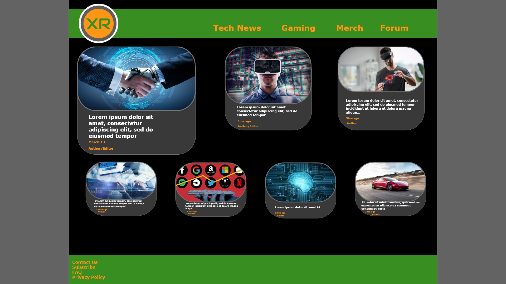
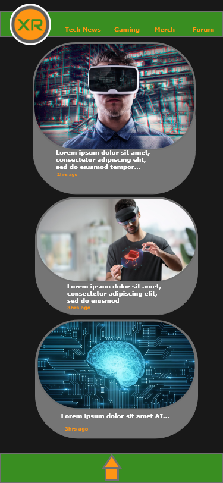

Assignment 2
George W. Gallagher
Site Map

Readers will see a lot of value in this site. The articles that will be present on the site will be informative and will be directly compatible with the target audience. Articles will be more than just stories. Articles will contain all kinds of relevant material such as new game releases, new tech reviews and news about some of the most notable tech companies and all of their new breakthroughs in technology. The websites Forum will also serve as a page were readers can find answers to FAQs and grow the community.
Wire frame for iPad
Wire Frame for Web
Wire Frame for iPhone
After completing the assignment...
Overall im happy with what i learned from assignment 2. After my completing my assignment and really taking a good look at the wire frames im a little displeased with the colors i chose. I also think there is a lot of wasted space if my wire frame was an actual webpage. To say the least this assignment was really good practice for me in Adobe XD and furthering my HTML/CSS skills, but i will definitely be doing a lot of thinking and making a lot of changes in overall appearance of the site. Im looking forward to learning more in class so that i cant make my site the way i actually want it to look.